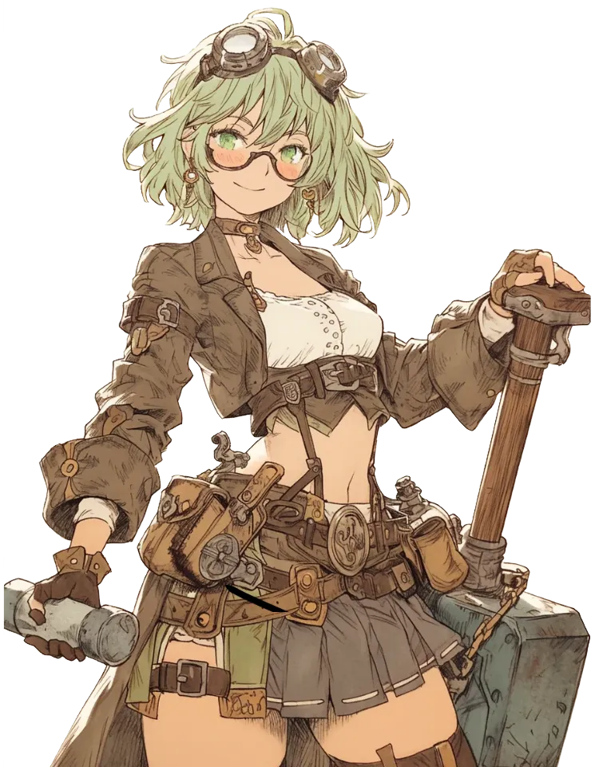

テキストファイルを編集するだけで自分だけのノベルゲームが作れる！取扱説明書 & シナリオ記述マニュアル
本ツールは、プログラミングの知識がなくてもノベルゲームを作成できるゲームエンジンです。
最低限の機能を備えたシンプルで軽量なツールとなっており、手軽にノベルゲームを制作できます。
広告が自動挿入されるタイプの無料サーバーをご利用の場合、サーバー側が挿入する広告コードの影響で「プレビューやゲーム画面のレイアウトが意図通りに表示されない」「一部演出タグ（文字色指定など）が正常に表示されない」といった不具合が発生する場合があります。
動作確認・運用の際は、広告非表示のサーバーや、エディタ（VS Code や PhoenixCode）のローカルプレビュー機能のご利用を推奨いたします。
index.html : ゲームのシステム本体（プレイヤーが遊ぶ画面）editor.html : プレビュー付きシナリオエディタ（制作・編集用）debug.html : 変数管理＆デバッグツール（テストプレイ・動作確認用）scenario.txt : ゲームのシナリオファイル（テキスト編集で作品を作ります）Readme.txt : 説明書ファイル本ツールには、ブラウザ上でシナリオを作成できる「専用エディタ」と、分岐や変数の挙動をリアルタイムで検証できる「変数管理＆デバッグツール」が付属しています。ブラウザ（Chrome, Edge等）で開いてご使用ください。
ツールを使用する際は VS Code や PhoenixCode のプレビュー機能から開くか、ローカルサーバー経由・Webサーバーにアップロードしてご利用ください。ファイルを直接ダブルクリックして開くとローカルファイルのセキュリティ制限（CORS制限等）を受けるため、通信やファイルの読み込みが正しく動作しない場合があります。
ゲーム本体（index.html）と並べて開くことで、ブラウザ間のリアルタイム通信機能を通じてゲームの状態を外部から確認・操作できます。シナリオ後半のテストや分岐条件のチェックに活用してください。
charaA、charaB、charaC）の現在値をリアルタイムに監視できます。数値入力欄から直接任意の値を設定し「反映」を押すか、「全パラメータを一括変更」でテストしたい数値へ即座に変更できます。
scenario.txt には「会話文」と「演出用コマンド（@から始まる行）」を記述します。
@bg: images/bg01.webp
@bgm: sound/sound01.mp3
@character: images/honoka.webp|pos:center
ほのか:こんにちは！『ノベルゲーム制作ツール』へようこそ！
目が覚めると、見知らぬ部屋にいた……。
# ここはコメント行です（ゲーム内には表示されません） :」で区切ります。（例：ほのか:こんにちは！）:」がない行は、話者名なしの「地の文（ト書き）」になります。（例：目が覚めると、見知らぬ部屋にいた……。）@」から始まる行は、背景変更やBGM再生などのシステム命令です。<color:色指定>強調したい文字</color> と書くと部分的に文字の色を変えられます。（例：<color:red>危険！</color>、<color:#ff9900>重要メッセージ</color>）#」または「//」で始まる行はコメント（メモ書き）となり、ゲームには表示されません。シナリオ内で使用できる主要な演出コマンドおよび装飾タグの一覧です。
| コマンド・タグ | 記述例 | 説明 |
|---|---|---|
| 文字色の指定 | <color:[色指定]>文章</color> |
テキスト内の特定の文字に色を付けます。 色名（ red, yellow など）やカラーコード（#ff0000 など）で指定できます。（例： <color:red>危険！</color>） |
| 背景画像の変更 | @bg: [画像パス] |
背景画像を変更します。（例：@bg: images/bg01.webp）※空文字「 @bg: 」にすると背景を消去（黒画面）します。 |
| BGMの再生・停止 | @bgm: [音声パス] |
BGMを再生します。（例：@bgm: sound/sound01.mp3）※空文字「 @bgm: 」にするとBGMを停止します。 |
| 立ち絵表示・位置指定 | @character: [画像パス]|pos:[位置] |
位置（pos）は left（左）、center（中央）、right（右）から指定できます（省略時は center）。（例： @character: images/honoka.webp|pos:left）※空文字「 @character: 」にすると立ち絵を消去（非表示）します。 |
| 画面フェード（暗転） | @fade: true |
直後のセリフに移動する際、黒画面を介して滑らかに切り替えます。 |
| 移動先ラベル作成 | @label: [ラベル名] |
選択肢の飛び先やルート分岐先の「目印」として配置します。（例：@label: happy_end） |
| 選択肢表示・好感度加算 | @choice: ボタン文章|next:ラベル名|favor:キャラ名:数値 / ... |
選択肢ボタンを表示します。「/」で区切ることで複数の選択肢を作れます。「 favor:キャラ名:数値」で対象キャラ（charaA/charaB/charaC）の好感度を加減算します。（例： @choice: ほのかと行く|next:route_a|favor:charaA:10 / 裕也と行く|next:route_b|favor:charaB:10） |
| 変数による自動分岐 | @branch: type:[モード]|... |
シナリオに合わせて3通りの分岐モードを使い分けられます。 ・個別判定: type:single|chara:charaA|border:10|target:happy_end|else:normal_end（指定キャラの数値判定）・最多判定: type:max|else:normal_end（一番数値が高いキャラのエンディングへ自動分岐）・複合判定: type:multi|cond:charaA>=10,charaC>=10|target:true_end|else:normal_end（複数条件判定） |
| スタッフロール開始 | @startCredits: true |
スタッフロールを開始します。 |
ゲームのプレイ中、画面右上（スマホは上部）のメニューから以下の機能が使えます。
「index.html」の該当部分を直接書き換えることで、タイトル画面や演出、システム音を変更できます。
「index.html」内の「タイトル画面」にある以下の部分を書き換えてください。
<!-- タイトル画面 -->
<div id="title-screen">
<h1>ノベルゲームタイトル</h1>
<button id="start-btn" class="menu-btn">NEW GAME</button>
<button id="title-load-btn" class="menu-btn">LOAD GAME</button>
</div>「index.html」内の「タイトル画面レイヤー」にある以下の部分を書き換えてください。
/* タイトル画面レイヤー */
#title-screen {
position: absolute;
top: 0;
left: 0;
width: 100%;
height: 100%;
background-image: url('images/bg01.webp'); /* ←ここを変更してください */
background-size: cover;
background-position: center;
display: flex;
flex-direction: column;
justify-content: center;
align-items: center;
gap: 15px;
z-index: 100;
}「index.html」内の「スタッフロールデータ」にある以下の部分を書き換えてください。
img: "images/bg01.webp",
roles: [
{ role: "制作・シナリオ", name: "okojo" },
]タイトル画面のBGMやシステム音を編集するときは、「index.html」内の「共通定数設定」から以下の部分を書き換えてください。
// 共通定数設定
const TITLE_BGM_URL = "sound/sound01.mp3";
const ENDING_BGM_URL = "sound/ending.mp3";
const SOUND_EFFECTS = {
click: "sound/click.mp3",
type: "sound/type.mp3",
select: "sound/select.mp3"
};画面左上に表示される好感度（変数）を非表示にしたい場合は以下の部分を削除してください。
<!-- 好感度・ステータス表示 -->
<div id="favor-display"></div>セーブ・ロード画面に表示される好感度（変数）を非表示にしたい場合は以下の部分を変更してください。
まず、updateModalSlots 関数内にある以下の行を探します。
<!-- セーブ・ロード画面に文字を表示する -->
previewEl.textContent = `${data.speaker}: ${shortText} (${favorText})`;この部分から (${favorText}) を削除して、以下のように書き換えてください。
<!-- セーブ・ロード画面に文字を表示する -->
previewEl.textContent = `${data.speaker}: ${shortText}`;行の末尾にある「`;」を削除してしまうとゲームが正常に動作しなくなります。誤って削除してしまわないようにご注意ください。
「index.html」のスタイル定義（CSS）を書き換えるだけで、ゲーム全体の配色（UIデザイン）を一括で変更できます。
「index.html」をテキストエディタで開き、以下の :root 部分のカラーコードをご希望の色に書き換えてください。
:root {
/* ベース背景色 */
--bg-outer: #050a14; /* 画面外側の背景色 */
--bg-game: #0d1b2a; /* ゲーム画面・モーダル背景色 */
--border-game: #1b263b; /* ゲーム画面枠線 */
/* メインテーマカラー（ボタン・アクセント） */
--color-primary: #ffd166; /* ボタン背景・強調表示 */
--color-primary-hover: #ffeea9; /* ボタンホバー時 */
--color-primary-text: #1d3557; /* 主に黄系背景上のテキスト色 */
/* メッセージウィンドウ */
--msg-box-bg: rgba(255, 255, 255, 0.92); /* メッセージ枠背景 */
--msg-box-border: #1d3557; /* メッセージ枠線 */
--msg-speaker-text: #1d3557; /* 話者名テキスト色 */
--msg-body-text: #2b2d42; /* 本文テキスト色 */
}作品の雰囲気に合わせて、以下のコードブロックを丸ごとコピーして :root { ... } 部分に上書き貼り付けして利用できます。
:root {
--bg-outer: #0b0e14;
--bg-game: #121824;
--border-game: #00f0ff;
--color-primary: #00f0ff;
--color-primary-hover: #70f7ff;
--color-primary-text: #0b0e14;
--color-secondary: #1a2332;
--color-secondary-border: #00f0ff;
--color-secondary-text: #00f0ff;
--color-active: #ff0055;
--msg-box-bg: rgba(18, 24, 36, 0.92);
--msg-box-border: #00f0ff;
--msg-speaker-text: #00f0ff;
--msg-body-text: #ffffff;
--modal-bg: rgba(11, 14, 20, 0.95);
--modal-card-bg: #1a2332;
--modal-card-border: #00f0ff;
--modal-btn-bg: #00f0ff;
--modal-btn-hover: #70f7ff;
--text-light: #ffffff;
}:root {
--bg-outer: #121212;
--bg-game: #1a1a1a;
--border-game: #444444;
--color-primary: #e0e0e0;
--color-primary-hover: #ffffff;
--color-primary-text: #121212;
--color-secondary: #2a2a2a;
--color-secondary-border: #888888;
--color-secondary-text: #ffffff;
--color-active: #880000;
--msg-box-bg: rgba(20, 20, 20, 0.92);
--msg-box-border: #666666;
--msg-speaker-text: #ffffff;
--msg-body-text: #dddddd;
--modal-bg: rgba(18, 18, 18, 0.95);
--modal-card-bg: #2a2a2a;
--modal-card-border: #666666;
--modal-btn-bg: #444444;
--modal-btn-hover: #666666;
--text-light: #ffffff;
}:root {
--bg-outer: #1c140d;
--bg-game: #2b1f14;
--border-game: #c89b3c;
--color-primary: #c89b3c;
--color-primary-hover: #e5b85c;
--color-primary-text: #1c140d;
--color-secondary: #f4ebd9;
--color-secondary-border: #8c2d19;
--color-secondary-text: #8c2d19;
--color-active: #8c2d19;
--msg-box-bg: rgba(244, 235, 217, 0.94);
--msg-box-border: #8c2d19;
--msg-speaker-text: #8c2d19;
--msg-body-text: #2b1f14;
--modal-bg: rgba(28, 20, 13, 0.95);
--modal-card-bg: #f4ebd9;
--modal-card-border: #c89b3c;
--modal-btn-bg: #8c2d19;
--modal-btn-hover: #a83a22;
--text-light: #ffffff;
}:root {
--bg-outer: #2d1b28;
--bg-game: #fff0f5;
--border-game: #ffb6c1;
--color-primary: #ff69b4;
--color-primary-hover: #ff8da1;
--color-primary-text: #ffffff;
--color-secondary: #ffffff;
--color-secondary-border: #ff69b4;
--color-secondary-text: #ff69b4;
--color-active: #ff1493;
--msg-box-bg: rgba(255, 255, 255, 0.94);
--msg-box-border: #ff69b4;
--msg-speaker-text: #d81b60;
--msg-body-text: #4a2e35;
--modal-bg: rgba(45, 27, 40, 0.95);
--modal-card-bg: #ffffff;
--modal-card-border: #ffb6c1;
--modal-btn-bg: #ff69b4;
--modal-btn-hover: #ff8da1;
--text-light: #ffffff;
}:root {
--bg-outer: #0a0002;
--bg-game: #140307;
--border-game: #800000;
--color-primary: #a30000;
--color-primary-hover: #cc0000;
--color-primary-text: #ffffff;
--color-secondary: #1a050a;
--color-secondary-border: #800000;
--color-secondary-text: #e6b8b8;
--color-active: #ff0000;
--msg-box-bg: rgba(20, 5, 8, 0.92);
--msg-box-border: #800000;
--msg-speaker-text: #ff4d4d;
--msg-body-text: #e6b8b8;
--modal-bg: rgba(10, 0, 2, 0.96);
--modal-card-bg: #1a050a;
--modal-card-border: #800000;
--modal-btn-bg: #800000;
--modal-btn-hover: #a30000;
--text-light: #ffffff;
}「index.html」と「scenario.txt」（および使用する画像・音声素材）をWebサーバーにアップロードすれば、スマホやPCのブラウザで誰でも遊べる状態で公開できます。
